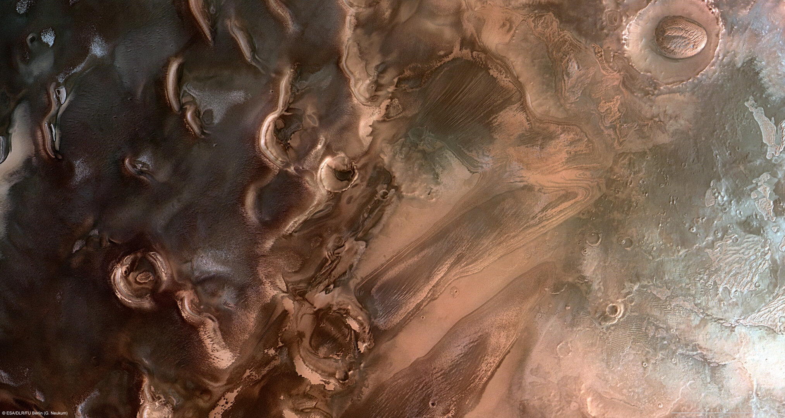
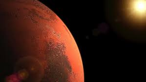
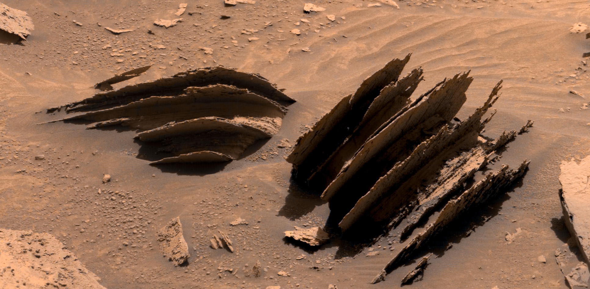
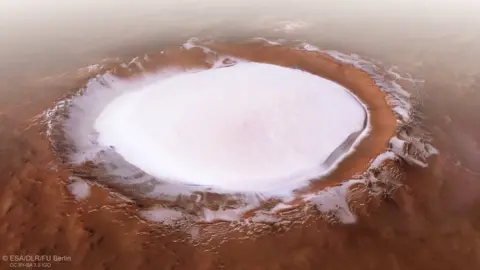

Mars Polar Ice Caps
The frozen regions at the north and south poles of Mars

North Polar Cap
- Diameter: Approximately 1,000 km (620 miles)
- Composition: Primarily water ice with seasonal carbon dioxide frost
- Thickness: Up to 3 km (1.9 miles)
- Features: Spiral troughs and layers that record climate history
- Location: Centered at 90°N
The North Polar Cap is a permanent feature composed mainly of water ice. During the Martian winter, it is covered by a thin layer of carbon dioxide ice (dry ice) that sublimates (changes directly from solid to gas) during the summer.
One of the most distinctive features of the North Polar Cap is its spiral pattern of troughs, which scientists believe are formed by a combination of wind patterns, solar heating, and the planet's rotation.
South Polar Cap
- Diameter: Approximately 350 km (220 miles) in summer, expanding to 3,000 km (1,860 miles) in winter
- Composition: Permanent water ice cap covered by a thicker layer of carbon dioxide ice
- Thickness: Up to 3 km (1.9 miles)
- Features: "Swiss cheese" terrain caused by sublimation of CO₂ ice
- Location: Centered at 90°S
The South Polar Cap differs from its northern counterpart in that it retains a permanent layer of carbon dioxide ice year-round. This is due to the south pole being colder than the north pole, as Mars' orbit is more elliptical than Earth's.
The "Swiss cheese" appearance of the South Polar Cap is caused by the sublimation of carbon dioxide ice, leaving behind circular depressions in the surface. These features change over time as more ice sublimates during the Martian summer.
Seasonal Changes
The Martian polar caps undergo dramatic seasonal changes as Mars orbits the Sun. During winter, the caps expand as carbon dioxide from the atmosphere freezes onto the surface. In summer, much of this dry ice sublimates back into the atmosphere, causing the caps to shrink.

Spring
CO₂ begins to sublimate

Summer
Minimum ice cap size

Fall
CO₂ begins to freeze

Winter
Maximum ice cap size
These seasonal changes affect Mars' atmosphere and climate. As carbon dioxide freezes and sublimates, the atmospheric pressure changes by up to 30%, which is much more dramatic than seasonal changes on Earth.
Discovery and Research
The polar caps of Mars have been observed from Earth since the 17th century. Italian astronomer Giovanni Cassini made some of the first recorded observations of the polar caps in 1666.
Modern exploration of the Martian poles began with the Mariner and Viking missions in the 1960s and 1970s. More recently, missions such as Mars Global Surveyor, Mars Reconnaissance Orbiter, and Phoenix Lander have provided detailed information about the composition and structure of the polar caps.
Key Discoveries
- 2008: Phoenix Lander confirmed the presence of water ice just below the surface near the north pole
- 2011: Mars Reconnaissance Orbiter discovered flowing water during warm seasons
- 2018: Radar data suggested a possible liquid water lake beneath the south polar ice cap
- 2020: Multiple subsurface lakes detected under the south polar cap
The polar caps are of great interest to scientists because they contain a record of Mars' climate history in their layers, similar to ice cores on Earth. They also represent the largest known reservoirs of water on Mars, which could be crucial for future human exploration.